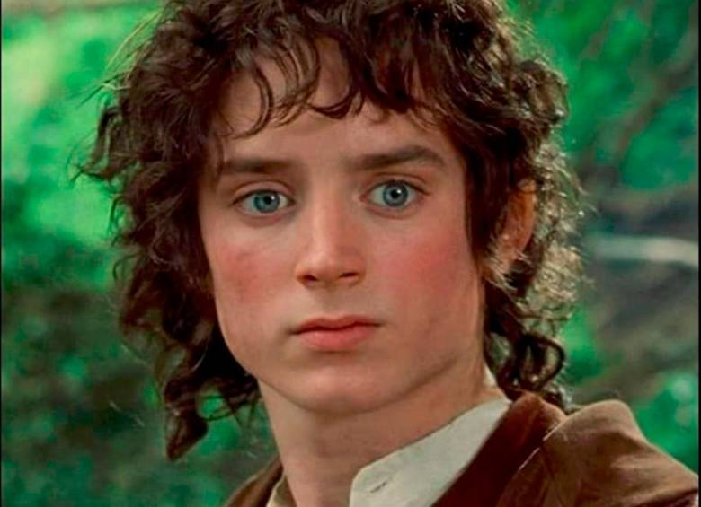
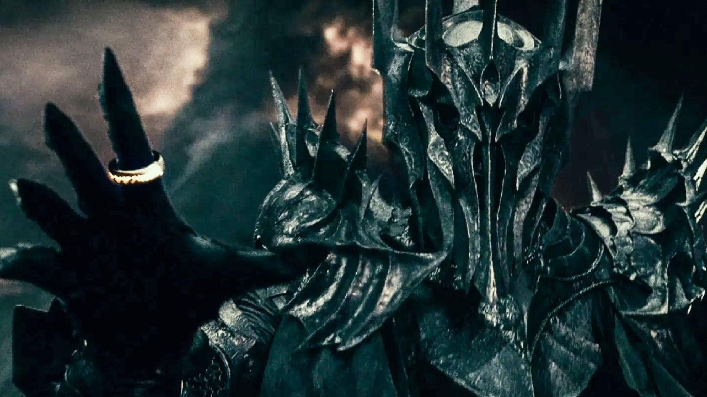
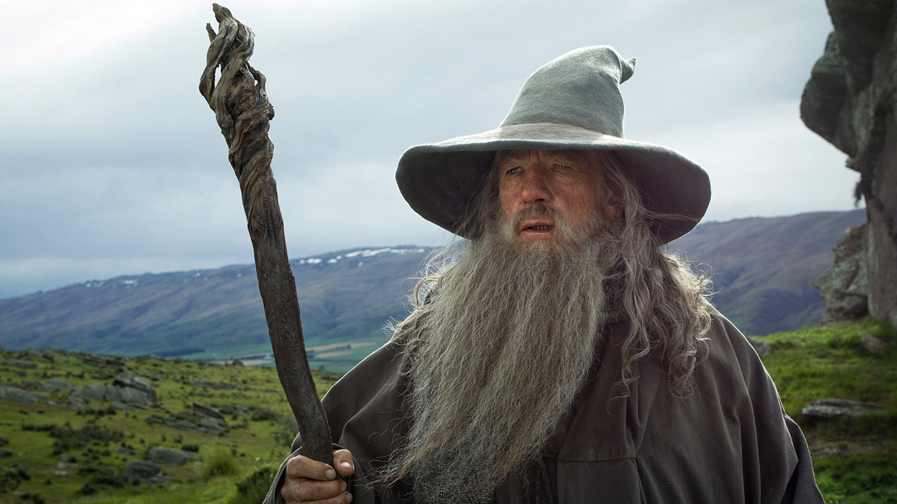
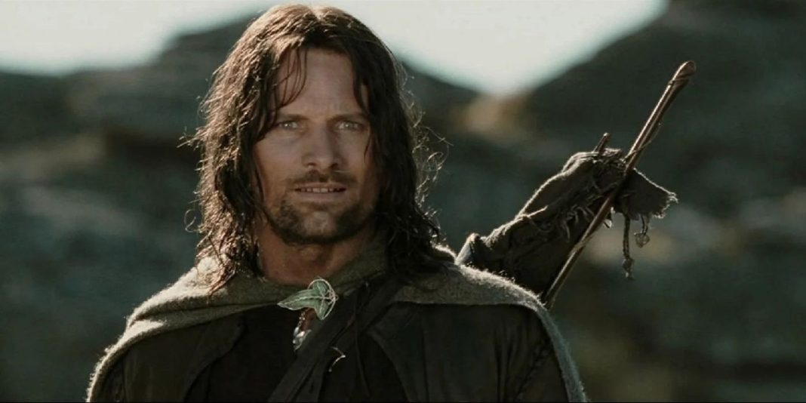
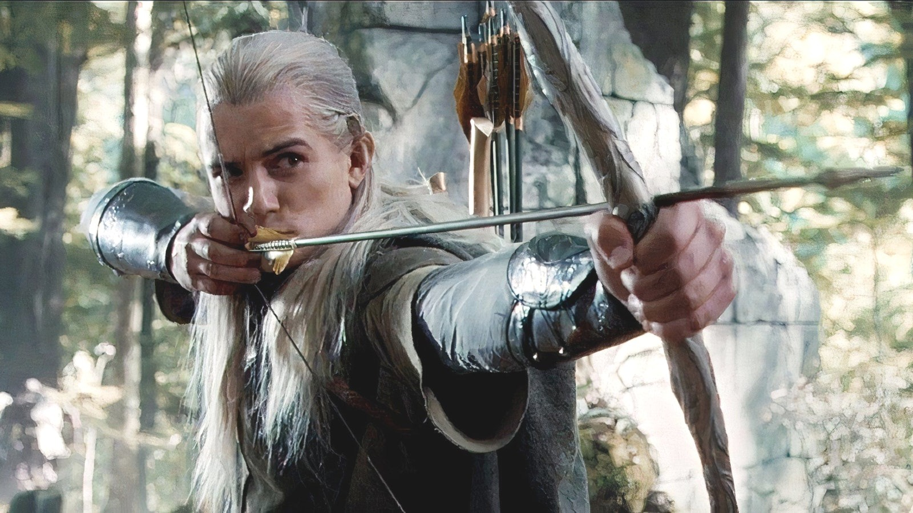
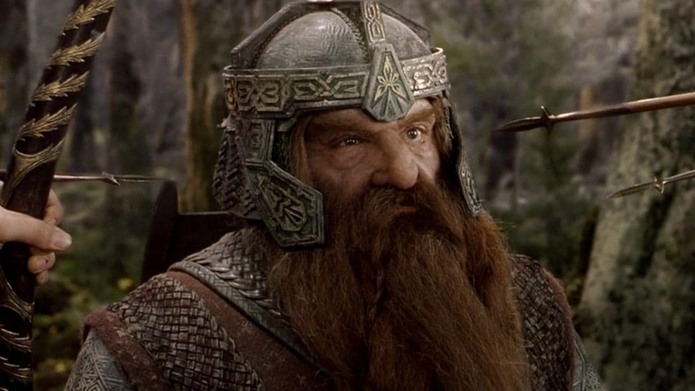

Frodo Bolsón
Raza
Hobbit
Origen
La Comarca
Edad
50 años
Descripción
El portador del Anillo Único, un hobbit valiente de la Comarca.
Pertenece a la raza de los hobbits. Es hijo de Drogo Bolsón y de Prímula Brandigamo, sobrino de Bilbo Bolsón y medio primo de Merry. Títulos: El Portador del Anillo, Frodo Nuevededos y Amigo de los Elfos.
Frodo era un hobbit muy diferente a los demás: no comía demasiado, le gustaba leer, era mas sensible que los demás, entre otros. Todo esto debido a que era un Hobbit albo, era amigo de diferentes razas; por eso se gano el apodo Amigo de los Elfos.
Sauron
Raza
Maiar
Origen
¿?
Edad
¿?
Descripción
Señor de los Anillos. Creador de los Anillos de Poder, con el objetivo de dominar a todas las razas de la Tierra Media.
Era el más poderoso de los servidores de Melkor (Morgoth) y uno de los Maiar de mayor poder. Fue lugarteniente de la fortaleza de Angband.
Se le conoció también como "el Nigromante" en "El Hobbit" antes de descubrir su verdadera identidad y "El Señor Oscuro" por los hombres de Gondor entre otros muchos nombres.
Gandalf
Raza
Maiar
Origen
¿?
Edad
¿?
Descripción
Es el mago de la Compañía del Anillo. Juega un gran papel en la destrucción del Anillo Único.
Es un istar (‘mago’), uno de los espíritus maia enviados a la Tierra Media durante la Tercera Edad del Sol para ayudar a sus habitantes en la lucha contra el «señor oscuro» Sauron. Allí adoptó el aspecto de un anciano de barba larga y de color blanca grisácea, vestido con una gran capa gris, un sombrero puntiagudo de color azul y un gran cayado.
Se le conocía de muchas maneras, Gandalf era el nombre que más se usaba; Mithrandir le llamaban los elfos y hombres de Gondor; Incánus, entre los hombres del sur; Tharkûn, entre los enanos y Olórin, en las Tierras Imperecederas, siendo éste su nombre original.
Aragorn
Raza
Humano
Origen
Dúnedain
Edad
80 años
Descripción
Rey de Gondor y de la Tierra Media, formó parte de la Compañía del Anillo.
Era capitán de los montaraces del norte, segundo de ese nombre, hijo de Arathorn II y Gilraen, apodado Trancos en Bree, conocido como Thorongil (el "Águila de la estrella") en Rohan y Gondor en los días de Thengel y Ecthelion II, respectivamente, de niño conocido en Rivendel como Estel ("Esperanza"), capitán de los Pueblos Libres durante la Guerra del Anillo y después, gobernante del Reino Unificado de Gondor y Arnor bajo el nombre de Elessar Telcontar.
lideró la Comunidad del Anillo tras la caída de Gandalf en las Minas de Moria mientras luchaba contra el Balrog. Cuando se rompió la Comunidad, siguió a los hobbits Meriadoc Brandigamo y Peregrin Tuk con la ayuda del elfo Legolas y el enano Gimli al bosque Fangorn. Luego luchó en la batalla del Abismo de Helm y en la Batalla de los Campos del Pelennor. Después de derrotar a las fuerzas de Sauron en Gondor, lideró un ejército de Gondor y Rohan contra la Puerta Negra de Mordor para distraer la atención de Sauron para que Frodo Bolsón y Samsagaz Gamyi pudieran tener la oportunidad de destruir el Anillo Único en el Monte del Destino.
Legolas
Raza
Elfo
Origen
Bosque Negro
Edad
2900 años
Descripción
Participó en la Compañía del Anillo, y fue envíado a la misma en representación del pueblo élfico.
Es un elfo sindar, hijo de Thranduil, Rey de los Elfos Silvanos del Bosque Negro; por lo tanto, príncipe del Bosque Negro. Formó parte de la Comunidad del Anillo y se hizo muy amigo de Aragorn y de Gimli. Su amistad con Gimli fue un gran paso para las relaciones entre enanos y elfos, muy debilitadas por sus antiguas guerras. Sus armas eran un arco que trajo del Bosque Negro, el cual cambió por uno que le regaló la Dama Galadriel y un par de cuchillos que llevaba en el carcaj donde guardaba las flechas. Era un gran arquero y guerrero y poseía una impresionante visión.
Después de la guerra, asistió a la coronación de Aragorn y a su boda con Arwen. Después, viajó con Gimli al Abismo de Helm, donde visitaron las Cavernas Centelleantes antes de recorrer el Bosque de Fangorn. Algún tiempo después, partió del Bosque Negro con la venia de su padre y fundó un principado elfo en Ithilien desde el cual ayudó a recuperar los bosques arrasados por la guerra. Tras la muerte de Aragorn, construyó un barco en Ithilien para cruzar el Mar rumbo a Valinor, travesía que realizó junto a Gimli, el enano, haciendo de él el primer Enano en entrar a las Tierras Imperecederas.
Gimli
Raza
Enano
Origen
Montañas Azules
Edad
140 años
Descripción
Participó en la Compañía del Anillo, y fue envíado a la misma en representación del pueblo enano.
Gimli fue un Enano muy respetado en la Tierra Media durante la Tercera y Cuarta Edad. Formó parte de la Compañía del Anillo y combatió en la guerra contra Sauron al final de la Tercera Edad. Después de la derrota de Sauron, se le dio el señorío de Aglarond, conocido como Las Cavernas Centelleantes en el Abismo de Helm.
La fecha de su muerte es desconocida, y según el Libro Rojo de la Frontera del Oeste, viajó con Legolas hacia el Oeste (tal vez concedido el permiso, a petición de Galadriel), convirtiéndose así en el primer enano para visitar las Tierras imperecederas.